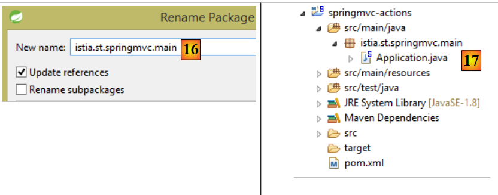
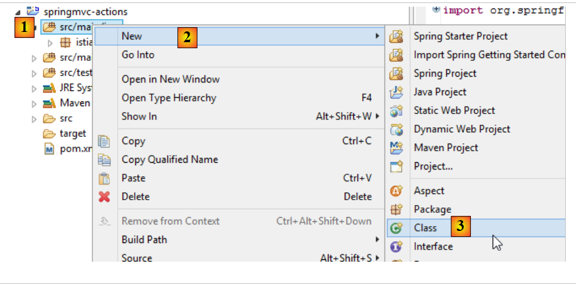
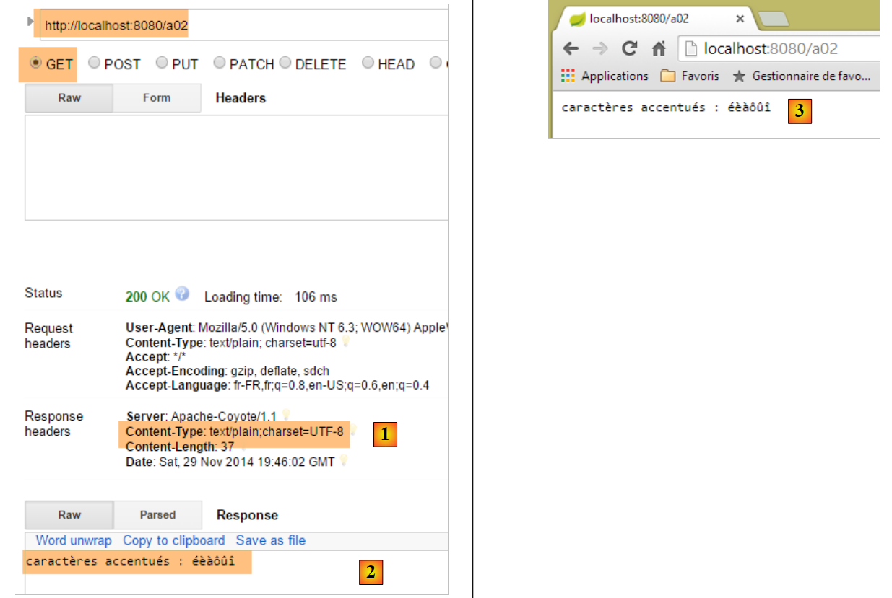
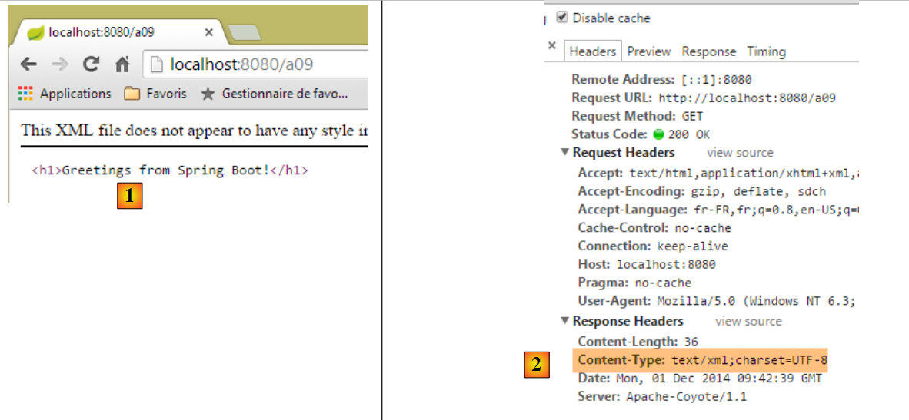
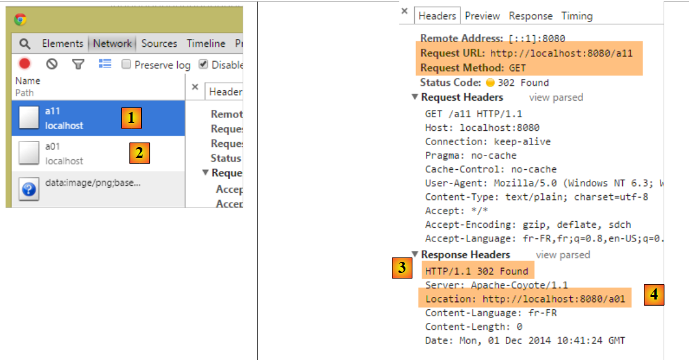
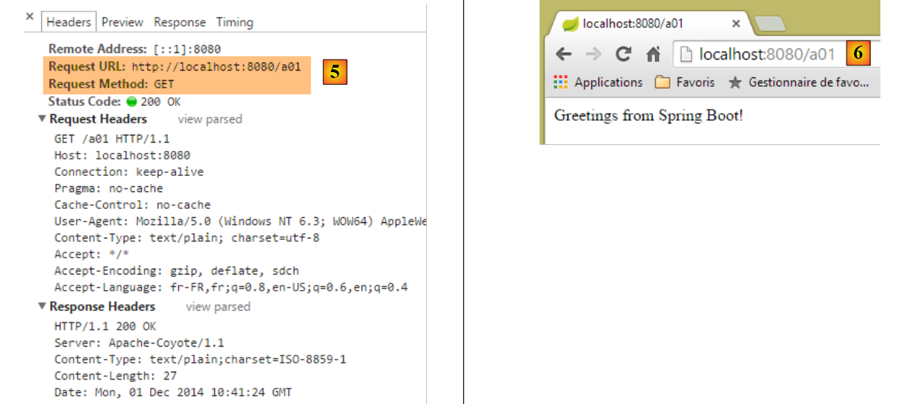

3. Ações: a resposta
Consideremos a arquitetura de uma aplicação Spring MVC:
 |
Neste capítulo, analisamos o processo que leva a solicitação [1] ao controlador e à ação [2a] que a irão processar, um mecanismo a que se chama encaminhamento. Apresentamos ainda as diferentes respostas [3] que uma ação pode enviar ao navegador. Estas podem ser outras coisas além de uma vista V [4b].
3.1. O novo projeto
Criamos um novo projeto Spring MVC:
 |
- em [1-2], criamos um novo projeto baseado no Spring Boot;
 |
- em [3], o nome do projeto Maven;
- em [4], o grupo Maven no qual será colocado o resultado da compilação do projeto;
- em [5], o nome atribuído ao produto da compilação;
- em [6], uma descrição do projeto;
- em [7], o pacote no qual será colocada a classe executável do projeto;
- em [8], a natureza do projeto. Trata-se de um projeto web com vistas Thymeleaf. Aqui, vemos todas as dependências Maven prontas a utilizar oferecidas pelo projeto Spring Boot;
- em [9], indica-se que o produto resultante da compilação Maven será empacotado num arquivo jar e não num war. O projeto irá, então, utilizar um servidor Tomcat incorporado que se encontrará nas suas dependências;
- em [10], avançamos para a próxima etapa do assistente;
- em [11], indica-se a pasta do projeto;
 |
- em [12], o projeto gerado;
- em [14-15], renomeia-se o pacote [istia.st.springmvc];
 |
- em [16], o novo nome do pacote;
- em [17], o novo projeto;
Criamos agora uma nova classe;
 |
- em [1-3], criamos uma nova classe;
 |
- em [5], atribuímos-lhe um nome e, em [4], especificamos o seu pacote;
- em [6], o novo projeto;
A classe é, por enquanto, a seguinte:
package istia.st.springmvc;
public class ActionsController {
}
Desenvolvemos este código da seguinte forma:
package istia.st.springmvc;
import org.springframework.web.bind.annotation.RestController;
@RestController
public class ActionsController {
}
- linha 6: a anotação [@RestController] indica duas coisas:
- que a classe [ActionsController], assim anotada, é um controlador Spring MVC, pelo que contém ações que processam os URL dos clientes;
- que o resultado dessas ações é enviado ao cliente;
A outra anotação [@Controller] com que nos deparámos é diferente: as ações de um controlador assim anotado devolvem o nome da vista que deve ser apresentada. É, então, a combinação dessa vista com o modelo construído pela ação para essa vista que fornece a resposta enviada ao cliente.
A alteração na estrutura do nosso projeto implica uma alteração na configuração do mesmo:
 |
A classe [Application] evolui da seguinte forma:
package istia.st.springmvc.main;
import org.springframework.boot.SpringApplication;
import org.springframework.boot.autoconfigure.EnableAutoConfiguration;
import org.springframework.context.annotation.ComponentScan;
import org.springframework.context.annotation.Configuration;
@Configuration
@ComponentScan({"istia.st.springmvc.controllers"})
@EnableAutoConfiguration
public class Application {
public static void main(String[] args) {
SpringApplication.run(Application.class, args);
}
}
- linha 9: a anotação [ComponentScan] aceita como parâmetro um array de nomes de pacotes onde o Spring Boot deve procurar componentes Spring. Aqui, colocamos nesse array o pacote [istia.st.springmvc.controllers] para que o controlador anotado com [@RestController] seja encontrado;
Vamos criar várias ações no controlador para ilustrar as suas principais características. Em primeiro lugar, vamos analisar os vários tipos de respostas possíveis de uma ação numa aplicação sem vistas.
3.2. [/a01, /a02] - Hello world
A nossa primeira ação será a seguinte:
@RestController
public class ActionsController {
// ----------------------- hello world ------------------------
@RequestMapping(value = "/a01", method = RequestMethod.GET)
public String a01() {
return "Greetings from Spring Boot!";
}
}
- linha 4: a anotação [RequestMapping] qualifica o pedido tratado pela ação anotada:
- o atributo [value] é a URL processada,
- o atributo [method] define o método aceite;
Assim, o método [a01] processa a solicitação HTTP [GET /a01].
- linha 5: o método [a01] devolve um tipo [String] que será enviado tal como está ao cliente;
- linha 6: a cadeia de caracteres devolvida;
Vamos executar a aplicação como já fizemos várias vezes e, em seguida, com o cliente [Advanced Rest Client], solicitamos o URL [/a01] com um GET [1-2]:
 |
- em [3], a resposta do servidor;
- em [4], os cabeçalhos HTTP da resposta. Vê-se que a codificação utilizada é [ISO-8859-1]. Pode-se preferir a codificação UTF-8. Isto pode ser configurado;
- em [5], solicitamos o mesmo URL com o navegador Chrome;
Adicionamos a seguinte ação [/a02] no controlador [ActionsController] (por isso, por vezes, confundiremos o URL com o método que o processa sob o nome de ação):
// ----------------------- caracteres acentuados - UTF8 ------------------------
@RequestMapping(value = "/a02", method = RequestMethod.GET, produces="text/plain;charset=UTF-8")
public String a02() {
return "caractères accentués : éèàôûî";
}
- linha 2: o atributo [produces="text/plain;charset=UTF-8"] indica que a ação envia um fluxo de texto com caracteres codificados no formato [UTF-8]. Este formato permite, nomeadamente, a utilização de caracteres acentuados;
Para ter em conta esta nova ação, temos de reiniciar a aplicação:
 |
O resultado é o seguinte:
 |
- em [1], vemos a natureza do documento enviado pelo servidor;
- em [2-3], os caracteres acentuados aparecem corretamente;
3.3. [/a03]: gerar um fluxo XML
Adicionamos a seguinte ação [/a03]:
// ----------------------- text/xml ------------------------
@RequestMapping(value = "/a03", method = RequestMethod.GET, produces = "text/xml;charset=UTF-8")
public String a03() {
String greeting = "<greetings><greeting>Greetings from Spring Boot!</greeting></greetings>";
return greeting;
}
- linha 2: o atributo [produces="text/xml;charset=UTF-8"] indica que a ação envia um fluxo XML com caracteres codificados no formato [UTF-8];
A sua execução resulta no seguinte:
 |
- em [1], o cabeçalho HTTP especifica que o documento enviado é do tipo HTML;
- em [2], o navegador Chrome utiliza esta informação para formatar o texto XML recebido;
Recorde-se que, com o Chrome, é possível aceder às trocas de dados HTTP entre o cliente e o servidor na janela de desenvolvimento (Ctrl-Shift-I):

A partir de agora, não iremos fazer sistematicamente capturas de ecrã das trocas de dados HTTP entre o cliente e o servidor. Por vezes, limitar-nos-emos a indicar o texto dessas trocas.
3.4. [/a04, /a05]: gerar um fluxo jSON
Adicionamos a seguinte ação [/a04]:
// ----------------------- gerar jSON ------------------------
@RequestMapping(value = "/a04", method = RequestMethod.GET)
public Map<String, Object> a04() {
Map<String, Object> map = new HashMap<String, Object>();
map.put("1", "un");
map.put("2", new int[] { 4, 5 });
return map;
}
- linha 3: a ação devolve um tipo [Map], um dicionário. Recorde-se que, com um controlador do tipo [@RestController], o resultado da ação é a resposta enviada ao cliente. Sendo o protocolo HTTP um protocolo de troca de linhas de texto, a resposta do cliente deve ser serializada numa cadeia de caracteres. Para tal, o Spring MVC utiliza vários conversores [Objet <---> chaîne de caractères]. A associação de um objeto específico a um conversor é feita através da configuração. Aqui, a autoconfiguração do Spring Boot irá inspecionar as dependências do projeto:
 |
As dependências do Jackson acima referidas são bibliotecas de serialização/deserialização de objetos em cadeias jSON. O Spring Boot irá, então, utilizar essas bibliotecas para serializar/deserializar os objetos devolvidos pelas ações. Encontrará um exemplo de código Java para serializar/deserializar objetos Java em jSON no parágrafo 9.7.
Repare-se que, na linha 2, não indicámos o tipo da resposta enviada. Vamos ver qual é o tipo predefinido que será enviado.
Os resultados no Chrome [1-3] são os seguintes:
 |
Vamos agora adicionar a seguinte ação [/a05]:
// ----------------------- gerar jSON - 2 ------------------------
@RequestMapping(value = "/a05", method = RequestMethod.GET)
public Personne a05() {
return new Personne(1,"carole",45);
}
A classe [Personne] é a seguinte:
 |
package istia.st.sprinmvc.models;
public class Personne {
// identificador
private Integer id;
// nome
private String nom;
// idade
private int age;
// construtores
public Personne() {
}
public Personne(String nom, int age) {
this.nom = nom;
this.age = age;
}
public Personne(Integer id, String nom, int age) {
this(nom, age);
this.id = id;
}
@Override
public String toString() {
return String.format("[id=%s, nom=%s, age=%d]", id, nom, age);
}
// getters e setters
...
}
A execução produz os seguintes resultados:
 |
- em [1], o servidor indica que o documento que está a enviar é o jSON;
- em [2], o documento jSON recebido;
3.5. [/a06]: devolver um fluxo vazio
Adicionamos a seguinte ação [/a06]:
// ----------------------- devolver um fluxo vazio ------------------------
@RequestMapping(value = "/a06")
public void a06() {
}
- na linha 3, a ação [/a06] não devolve nada. O Spring MVC irá então gerar uma resposta vazia para o cliente;
A execução produz os seguintes resultados:
 |
Acima, o atributo HTTP [Content-Length] na resposta indica que o servidor envia um documento vazio.
3.6. [/a07, /a08, /a09]: natureza do fluxo com [Content-Type]
Adicionamos a seguinte ação [/a07]:
// ----------------------- text/html ------------------------
@RequestMapping(value = "/a07", method = RequestMethod.GET, produces = "text/html;charset=UTF-8")
public String a07() {
String greeting = "<h1>Greetings from Spring Boot!</h1>";
return greeting;
}
- na linha 2, a ação [/a07] gera um fluxo HTML [text/html];
- linha 4: uma cadeia HTML;
A execução produz os seguintes resultados:
 |
- em [1], verifica-se que o Chrome interpretou a baliza HTML <h1>, que apresenta o seu conteúdo em letras grandes;
Agora, vamos fazer o mesmo com a seguinte ação [/a08]:
// ----------------------- resultado de HTML em text/plain ------------------------
@RequestMapping(value = "/a08", method = RequestMethod.GET, produces = "text/plain;charset=UTF-8")
public String a08() {
String greeting = "<h1>Greetings from Spring Boot!</h1>";
return greeting;
}
- linha 2: a resposta da ação é do tipo [text/plain];
Os resultados são os seguintes:
 |
- em [1], o Chrome não interpretou a baliza HTML <h1> porque o servidor lhe indicou que lhe estava a enviar um fluxo [text/plain] [2];
Vamos repetir algo semelhante com a ação [/a09] seguinte:
// ----------------------- resultado de HTML em text/xml ------------------------
@RequestMapping(value = "/a09", method = RequestMethod.GET, produces = "text/xml;charset=UTF-8")
public String a09() {
String greeting = "<h1>Greetings from Spring Boot!</h1>";
return greeting;
}
- linha 2: enviamos um fluxo do tipo [text/xml];
Os resultados são os seguintes:
 |
- no [1], o Chrome não interpretou a baliza HTML <h1> porque o servidor lhe indicou que lhe estava a enviar um fluxo [text/xml] [2]. Assim, tratou a tag <h1> como uma tag XML;
Destacamos nestes exemplos a importância do cabeçalho HTTP [Content-Type] na resposta do servidor. O navegador utiliza este cabeçalho para saber como interpretar o documento que recebe;
3.7. [/a10, /a11, /a12]: redirecionar o cliente
Criamos um novo controlador [RedirectController]:
 |
O código de [RedirectCntroller] será, por enquanto, o seguinte:
package istia.st.springmvc.controllers;
import org.springframework.stereotype.Controller;
import org.springframework.web.bind.annotation.RequestMapping;
import org.springframework.web.bind.annotation.RequestMethod;
@Controller
public class RedirectController {
}
- linha 7: utilizamos a anotação [@Controller], o que faz com que, a partir de agora, por predefinição, o tipo [String] do resultado das ações indique o nome de uma ação ou de uma vista;
Criamos a seguinte ação [/a10]:
// ------------ redirecionamento para uma ação de terceiros -----------------------
@RequestMapping(value = "/a10", method = RequestMethod.GET)
public String a10() {
return "a01";
}
- linha 4: devolvemos como resultado «a01», que é o nome de uma ação. Será então esta ação que enviará a resposta ao cliente;
Eis um exemplo:
 |
- em [2], recebemos o fluxo da ação [/a01];
- no [3], o navegador apresenta o URL da ação [/a10];
Vamos agora criar a seguinte ação [/a11]:
// ------------ redirecionamento temporário 302 para uma ação de terceiros -----------------------
@RequestMapping(value = "/a11", method = RequestMethod.GET)
public String a11() {
return "redirect:/a01";
}
Obtenemos os seguintes resultados:
 |
- nos registos do Chrome [1-2], observam-se duas solicitações, uma para [/a11] e outra para [/a01];
- em [3], o servidor responde com um código [302] que solicita ao navegador do cliente que se redirecione para oURL indicado pelo cabeçalho HTTP [Location:] [4]. O código [302] é um código de redirecionamento temporário;
O navegador efetua então a segunda solicitação para o código de redirecionamento URL:
 |
- em [5], a segunda solicitação do cliente;
- para [6], o navegador do cliente apresenta o URL da solicitação de redirecionamento;
Pode ser necessário indicar um redirecionamento permanente; nesse caso, deve enviar-se ao cliente o cabeçalho HTTP seguinte:
o que significa que o redirecionamento é permanente. Esta diferença entre redirecionamento temporário (302) e permanente (301) é tida em conta por alguns motores de busca.
Escrevemos a ação [/a12], que irá efetuar este redirecionamento permanente:
// ------------ redirecionamento permanente 301 para uma ação de terceiros----------------
@RequestMapping(value = "/a12", method = RequestMethod.GET)
public void a12(HttpServletResponse response) {
response.setStatus(301);
response.addHeader("Location", "/a01");
}
- linha 3: solicitamos ao Spring MVC que insira o objeto [HttpServletResponse], que encapsula a resposta enviada ao cliente;
- linha 4: define-se o [status] da resposta, o [301] do cabeçalho HTTP:
- linha 5: cria-se manualmente o cabeçalho HTTP seguinte:
que corresponde ao cabeçalho de redirecionamento URL.
A execução produz os seguintes resultados:
 |  |
Deste exemplo, fica-se com a forma de:
- gerar o estado da resposta HTTP;
- incluir um cabeçalho HTTP na resposta;
3.8. [/a13]: gerar a resposta completa
É possível controlar totalmente a resposta, tal como demonstra a seguinte ação da classe [ResponsesController]:
 |
// ----------------------- geração completa da resposta ------------------------
@RequestMapping(value = "/a13")
public void a13(HttpServletResponse response) throws IOException {
response.setStatus(666);
response.addHeader("header1", "qq chose");
response.addHeader("Content-Type", "text/html;charset=UTF-8");
String greeting = "<h1>Greetings from Spring Boot!</h1>";
response.getWriter().write(greeting);
}
- linha 3: o resultado da ação é [void]. Neste caso, para enviar uma resposta não vazia ao cliente, é necessário utilizar o objeto [HttpServletResponse response] fornecido pelo Spring MVC;
- linha 4: atribui-se à resposta um estado que não será reconhecido pelo cliente;
- linha 5: adiciona-se um cabeçalho HTTP que não será reconhecido pelo cliente;
- linha 6: adiciona-se um cabeçalho HTTP [Content-Type] para especificar o tipo de fluxo que vai ser enviado, neste caso HTML;
- linhas 7-8: o documento que seguirá os cabeçalhos HTTP na resposta;
Os resultados são os seguintes:
 |
- em [1], reconhecem-se os elementos da nossa resposta;
- em [2-3], verifica-se que o Chrome ignorou o facto de que:
- o estado HTTP da resposta não era um estado HTTP reconhecido,
- que o cabeçalho [header1] não era um cabeçalho HTTP reconhecido;
Se o cliente não for um navegador, mas sim um cliente programado, é possível utilizar os estados e os cabeçalhos que se desejar.